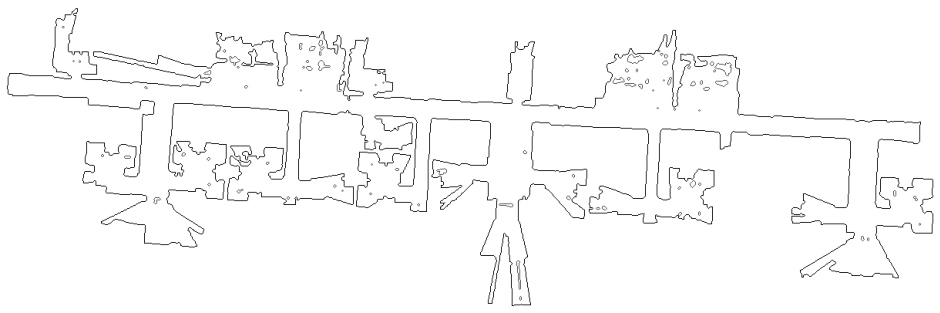

Stream: {{ stream_status }}
Last Frame: {{ last_frame_time }}
Temi's Location on Suite Map

📈 Real-Time Metrics
People Detected Today: -
Falls (Box): -
Falls (Pose): -
Falls (Bottom): -
Falls (Full): -
Frames Processed: -
Smells Detected Today: -
Total Smells: -
Smell Sensor Fluctuations Based on Moving Average (100x)
Timestamp: -